Version：Paperless-ngx 10.10.6
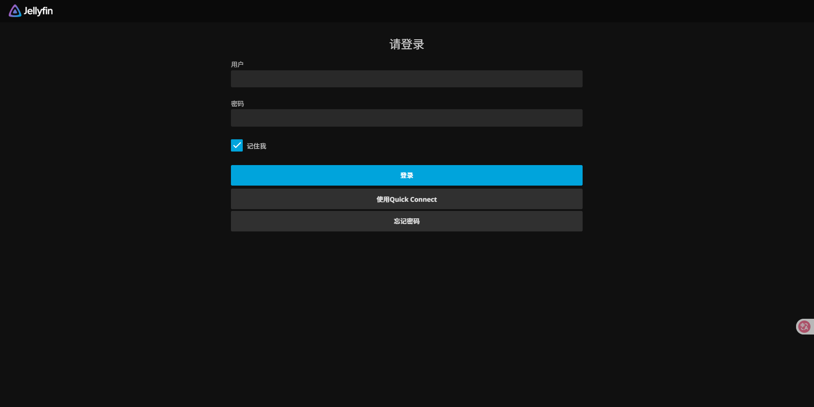
# 介绍
目前市面上比较主流的家庭媒体服务器的选择主要有三个：Plex、Emby 和 Jellyfin；其中前两款对于基本使用免费，但对于像通过显卡硬件解码等功能是需付费订阅才能使用；而 Jellyfin 是 Emby 某个版本开源后独立出来的一个影音服务软件，是完全开源和免费的。Jellyfin 在一些大佬改装配置好驱动后能适应不同的显卡硬转，以此达到在外网播放的情况下使用硬件转码流畅播放。
官网：https://jellyfin.org/
# 安装
为你的 jellyfin 存放创建缓存和配置文件夹：
# $PATH 为你的影视存放路径 | ||
mkdir -p /app/jellyfin | ||
cd /app/jellyfin | ||
mkdir -p cache config | ||
mkdir -p /<$PATH>/media |
# 硬解支持
要让 jellyfin 的 docker 容器调用核显驱动（即人们常说的开启硬解），要满足两个条件：
- 拥有支持视频解码的核心显卡，且核心显卡的驱动程序运行正常；
- 将核显驱动直通给 docker 容器，并赋予 docker 容器调用该驱动的权限。
对于系统是否满足上述第一个条件，可以输入以下命令进行检验：
ls -l /dev/dri | ||
total 0 | ||
drwxr-xr-x 2 root root 80 Jun 20 02:04 by-path | ||
crw-rw---- 1 root video 226, 0 Jun 20 02:04 card0 | ||
crw-rw---- 1 root render 226, 128 Jun 20 02:04 renderD128 |
终端返回的结果有 renderD128 ，那么它即对应你的核显，硬件系统满足视频解码的基本条件。
接下来为这个核显驱动授予 docker 容器的驱动权限；从上面可以看到 crw-rw---- 1 root render 226 中， root 为管理用户， render 为所在组，如果你不想麻烦可以在部署的时候直接赋予 root 权限，若是想分组或分用户管理，那就需要分别获取对应的用户 UID 或所属组 GID，通过如下命令获取（不同发行版请根据对应命令获取）：
获取 UID：
# <GROUP> 为查询的用户 | ||
id -u <USER_NAME> |
获取 GID：
# <GROUP> 为查询的组名 | ||
getent group <GROUP_NAME> | cut -d: -f3 |
运行 Docker：
docker pull nyanmisaka/jellyfin:latest | ||
docker run -d \ | ||
--name=jellyfin \ | ||
-e PUID=0 \ | ||
-e PGID=0 \ | ||
-e TZ=Asia/Shanghai \ | ||
-p 8096:8096 \ | ||
-v /app/jellyfin/config:/config \ | ||
-v /app/jellyfin/cache:/cache \ | ||
--mount type=bind,source=/srv/dev-disk-by-uuid-fb7da335-33b8-4fac-8bbe-24c4cd13ccf7/media,destination=/media,ro=true \ | ||
--device=/dev/dri/renderD128 \ | ||
--restart always \ | ||
nyanmisaka/jellyfin |
note：如果有需要用到不同的管理用户或管理组，那么在使用硬解的前提，需要获取对应 UID 和 GID 填写到部署上，否则后面使用硬解将会有问题，具体获取看上面。
# 使用
通过浏览器访问： http://localhost:8096 ，按照指示一步步初始化配置：
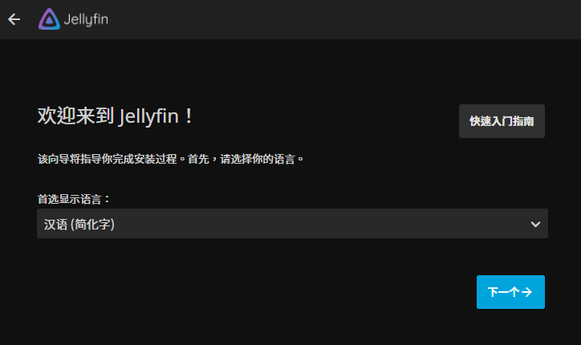
配置你的管理员账号：
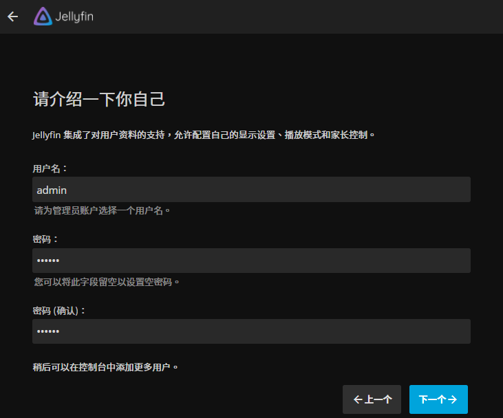
设置媒体读取路径，这里可以先跳过，后面进入控制台设置：
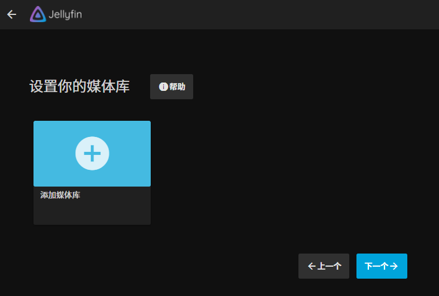
如需云端访问，可开启以下设置：
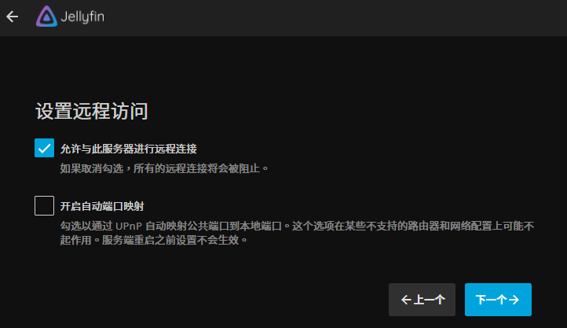
最后完成初始配置后，即可重新登录进入主界面：
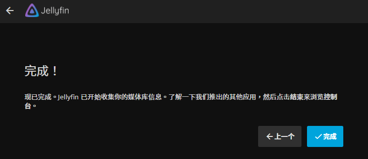
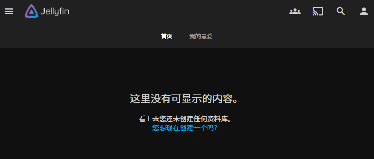
# 硬解配置
点击左上角：
进入 "控制台" ：
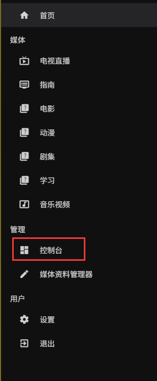
在 jellyfin 容器中的 shell 终端执行：
ls /dev/dri
确认显卡直通，正常将会显示：
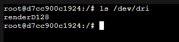
记录并配置解码器：
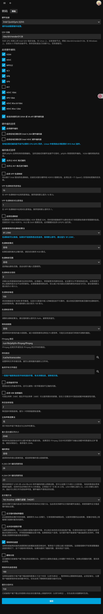
note：
- 硬件加速这里：下拉选择 "Video Acceleartion API (VAAP)" 或者 "Intel QuickSync (QSV)" ，不是太老的核 / 独显卡，建议选 QSV；
- 如果播放失败，则可以尝试关闭 "启用低电压模式的 Intel H.264 硬件编码器" 和 "启用低电压模式的 Intel HEVC 硬件编码器" ;
- 如需播放杜比视界，必须关闭 "启用 VPP 色调映射" ;
- 如需支持杜比视界格式的 HDR 视频，则必须打开 "首选系统原生的 DXVA 或 VA-API 硬件解码器" ;
- 最后根据实际情况选中 "允许实时提取字幕" 和 "限制转码速度" ；
测试转码：

硬解码资源占用：
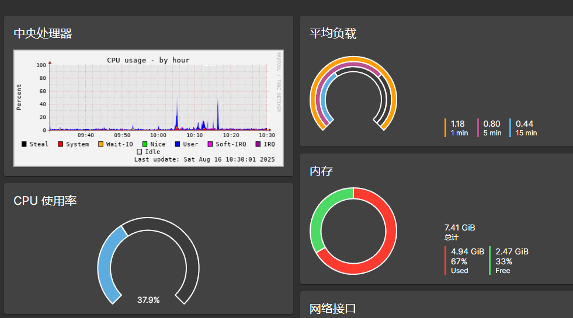
如果不使用硬解码，那么你将会看到 CPU 占用 95% 以上的使用率，并且对于低性能 CPU 来说，将会播放卡顿：
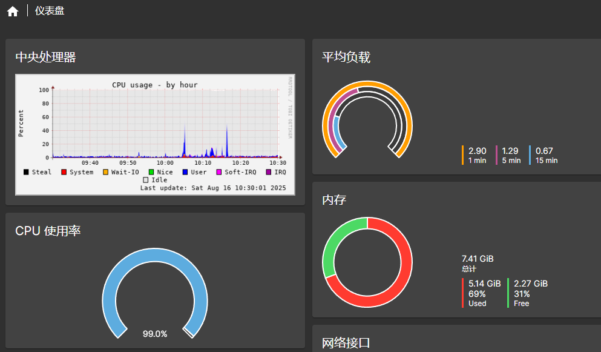
# 添加插件
控制台 -> 目录 -> 存储库 -> 点击加号进行添加
# Jellyfin Stable | |
http://fra1.mirror.jellyfin.org/releases/plugin/manifest-stable.json | |
# jellyfin-plugin-metashark | |
https://github.com/cxfksword/jellyfin-plugin-metashark/releases/download/manifest/manifest.json | |
# jellyfin-plugin-metatube | |
https://raw.githubusercontent.com/metatube-community/jellyfin-plugin-metatube/dist/manifest.json | |
# jellyfin-plugin-bangumi | |
https://kookxiang.github.io/jellyfin-plugin-bangumi/repository.json | |
# jellyfin-plugin-manifest | |
https://raw.githubusercontent.com/danieladov/JellyfinPluginManifest/master/manifest.json | |
# jellyfin-plugins-manifest | |
https://www.iamparadox.dev/jellyfin/plugins/manifest.json |
如果加载完以上插件后，可以按需安装相应插件，一般用以下插件足矣：
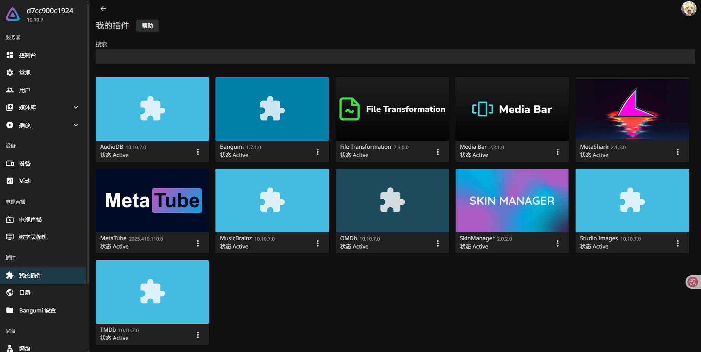
- File Transformation 和 Media Bar 是用于配置主题的，也即前面看到的电影背景封面及简介显示的轮播滚动。
- SkinManager 同样也是配置主题，目前里面支持九个主题配置。
- Bangumi 主要用于动漫刮削及动漫信息同步。
- MetaShark 和 MetaTube 则是用于电影和 xxx 的信息刮削。
- 其余的部分也是用于刮削及资源整理的，具体可测试使用。
# 安可
如果不想用网页端观看，而使用客户端，那么关于客户端应用可以在以下链接获取所需应用：
https://jellyfin.org/downloads
在这里，你也可以使用第三方的客户端 Findroid ：
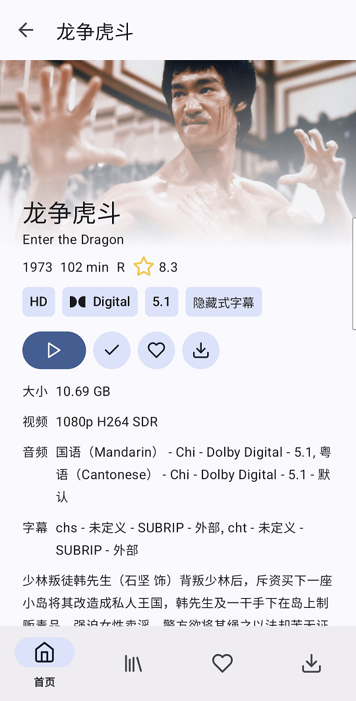
目前使用下来，有个致命缺陷，混合类型和音乐类型的合集是无法显示的，只能电影或电视剧。